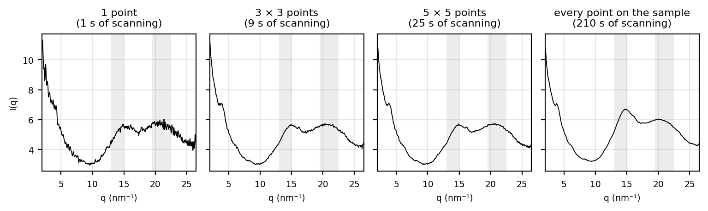
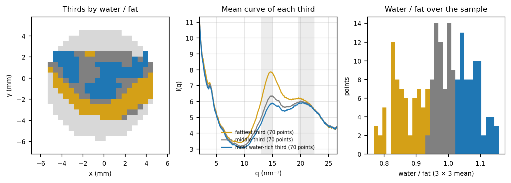

This chapter is a proposal, not a result. Findings 1-3 say a measurement has to reach water-rich tissue. On Human 1.0 the water-peak rule (Appendix C) could do this during scanning, as a stopgap. We recommend mapping the breast for Human 2.0: it applies the same water-peak idea after the scan, over the whole breast.
4.1 A Human 1.0 stopgap: the water-peak filter during scanning
The water-peak rule of Appendix C could be applied while the patient is on the instrument. At each position it needs a short scan, long enough to see the fat and water peaks; a quick analysis of that scan (correct the peak position, normalise, and check the water peak height against 0.35 with the water centred at q ≥ 19); and a decision: if the scan is water-rich the full scan proceeds, and if not the operator moves to a clearly different spot. The scanning software would need this analysis built in, much like the existing transmission check (Phase 1) that decides whether a position is scanned. In theory, this could be implemented on Human 1.0. It still depends on where the operator puts the beam, and gives a few points per breast.
4.2 The recommendation: mapping
To map the breast is to scan a grid of points, each for a short time, and decide afterwards which points to use. Each point gives a full 1D curve I(q), so a map is a 3D matrix: two positions (x, y) and q. Each point holds a curve, and each q holds an image of the breast at that q. Figure 4.1 shows an example measured at Ulster University on a tissue sample: a 26 × 25 grid at 0.5 mm spacing, 1 s per point, with 336 points measured and 210 of them on the tissue sample. The rest see only the empty holder. No background is subtracted.
Figure 4.1: The Ulster map, one value per point. Left to right: the total scattered intensity (the sample against the empty holder), the fat band (q 13-15), the water band (q 19.5-22.5), and the water band over the fat band, with each point averaged with its neighbours (3 × 3). Grey points are off the sample; white points were not measured.
Mapping works much like an XRD video rather than a snapshot. At every point we gather a frame. Each frame on its own has a low XRD signal-to-noise ratio, but it can be used as it is for transmission, giving high spatial resolution. Conversely, we can sum over more frames, covering more distance, for a better XRD signal-to-noise ratio at lower spatial resolution. The trade-off is chosen after the scan, and can be different for different questions.
A single 1 s point gives a noisy curve, but neighbouring points can be added together. Figure 4.2 shows one point in the middle of the sample on its own, and the mean of its 3 × 3 and 5 × 5 neighbourhoods and of every point on the sample: the fat and water peaks only become clear once points are added. On their own, the points are as noisy as the differences across the sample: neighbouring points differ in water/fat by about 0.10 from noise alone, while the 3 × 3 means range from 0.82 to 1.12 across the sample. Averaging n points cuts the noise by about √n, by 3 for a 3 × 3 block.
Code
centre = np.argwhere(on_sample).mean(axis=0).round().astype(int)cy, cx = centredef block_mean(half): block = on_sample[cy - half:cy + half +1, cx - half:cx + half +1]return np.nanmean(cube[cy - half:cy + half +1, cx - half:cx + half +1][block], axis=0), int(block.sum())curves = [("1 point", cube[cy, cx], 1)] + [(f"{2* h +1} × {2* h +1} points", *block_mean(h)) for h in (1, 2)] \+ [("every point on the sample", np.nanmean(cube[on_sample], axis=0), int(on_sample.sum()))]plt.rcParams["font.size"] =7fig, axes = plt.subplots(1, len(curves), figsize=(8, 2.4), sharey=True)for ax, (name, curve, n) inzip(axes, curves): ax.plot(map_q[q_shown], curve[q_shown], color="black", lw=0.7)for q_range in (MAP_FAT, MAP_WATER): ax.axvspan(*q_range, color="grey", alpha=0.15, lw=0) ax.set(title=f"{name}\n({n} s of scanning)", xlabel="q (nm⁻¹)", xlim=Q_SHOWN) ax.grid(alpha=0.3)axes[0].set_ylabel("I(q)")fig.tight_layout()plt.show()plt.rcParams["font.size"] =10

Figure 4.2: Adding points improves the 1D curve. One point in the middle of the sample on its own, and the mean of its 3 × 3 and 5 × 5 neighbourhoods and of every point on the sample. The grey bands mark the fat and water bands.
Because every point is kept, the map can be used in two ways after the scan:
Select regions. Points can be grouped by what they show — in particular the wettest 15% within each breast (Figure 1.1, Figure 1.2) — and only those used for the breast’s Water:Fat. That is a percentile inside the breast, not a fixed threshold on a few single points. A fixed water-peak threshold can still drop empty or too-dry points first; the ranking then picks the best tissue that remains. Figure 4.3 splits the sample into its most fatty, middle and most water-rich thirds by the 3 × 3 water/fat: the mean curves differ clearly, the fattiest with a fat peak standing above the water and the most water-rich with the two about level.
Compare whole breasts. The distribution of water/fat over every point of one breast can be compared with that of the other breast, rather than a few single points. This uses the whole breast and does not depend on where the tumour is (Chapter 3).
Code
cuts = np.nanpercentile(ratio_3, (100/3, 200/3))third = np.where(on_sample, np.digitize(ratio_3, cuts), -1)THIRDS = (("fattiest third", "#d4a017"), ("middle third", "grey"), ("most water-rich third", "tab:blue"))plt.rcParams["font.size"] =7fig, (map_ax, curve_ax, hist_ax) = plt.subplots(1, 3, figsize=(8, 2.8))from matplotlib.colors import ListedColormapmap_ax.imshow(np.where(measured &~on_sample, 1, np.nan), origin="lower", extent=extent, cmap="Greys", vmin=0, vmax=4)map_ax.imshow(np.where(on_sample, third, np.nan), origin="lower", extent=extent, cmap=ListedColormap([c for _, c in THIRDS]), vmin=-0.5, vmax=2.5, interpolation="nearest")map_ax.set(title="Thirds by water / fat", xlabel="x (mm)", ylabel="y (mm)")for k, (name, colour) inenumerate(THIRDS): chosen = third == k curve_ax.plot(map_q[q_shown], np.nanmean(cube[chosen], axis=0)[q_shown], color=colour, lw=1.2, label=f"{name} ({chosen.sum()} points)") hist_ax.hist(ratio_3[chosen], bins=np.linspace(np.nanmin(ratio_3), np.nanmax(ratio_3), 30), color=colour)for q_range in (MAP_FAT, MAP_WATER): curve_ax.axvspan(*q_range, color="grey", alpha=0.15, lw=0)curve_ax.set(title="Mean curve of each third", xlabel="q (nm⁻¹)", ylabel="I(q)", xlim=Q_SHOWN)curve_ax.legend(frameon=False, fontsize=5.5, loc="lower center")curve_ax.grid(alpha=0.3)hist_ax.set(title="Water / fat over the sample", xlabel="water / fat (3 × 3 mean)", ylabel="points")for ax in (map_ax, curve_ax, hist_ax): ax.set_box_aspect(1)fig.tight_layout()plt.show()plt.rcParams["font.size"] =10

Figure 4.3: Selecting regions after the scan. Left: the sample split into thirds by the 3 × 3 water/fat (fattiest, middle, most water-rich). Middle: the mean curve of each third. Right: the distribution of the 3 × 3 water/fat over every point of the sample, the kind of whole-breast summary that could be compared between a patient’s two breasts.
Mapping gives a whole-breast analysis: we can tell the adipose and glandular areas apart, analyse them separately if we want, and get an idea of where interesting tissue is — on the hypothesis of a tumour sphere of influence (Chapter 3) — without aiming at the tumour or deciding at the instrument.
4.3 What a whole-breast map would let us measure
With about three points per breast we get one noisy Water:Fat number, so we can only ask whether the mean is higher in the CANCER breast. A map of around 100 points per breast gives a distribution per breast. That supports several readouts (proposal only, not results):
Wettest region. A high quantile, or the mean of the wettest N points (not the single maximum), compared left against right.
Fattiest region as baseline. Finding 1 says the fattiest 15% look the same across cohorts, so this is a within-patient control, not a discriminator: thickness, calibration and density offsets cancel. Wettest minus fattiest (or their ratio) is a natural per-patient measure.
Mean Water:Fat per breast, left against right (paired, so it controls for the patient).
Variance of Water:Fat per breast, left against right. Correct for counting noise from neighbour-point differences (about 0.10 on the Ulster map), and report a coefficient of variation or work on the log ratio, because variance scales with the mean. Mask edge and thin points.
Comparison to a “normal” reference (mean or variance) is deferred: it needs a healthy-volunteer cohort, and normal varies with density, age and menopausal status.
A map can separate a global effect (the mean shifts), a local effect (the wet tail grows) and a heterogeneity effect (the variance changes). Single-point scans cannot. It also gives internal controls, several independent readouts, and spatial information on where the wet tissue is, which ties to the tumour sphere-of-influence idea in Chapter 3 (Chapter 3).
For a small pilot, pre-specify one primary endpoint (wettest region, left against right) and treat the rest as secondary or exploratory, to avoid multiple-comparison problems. Points within a breast are spatially correlated, so analyse at breast or patient level, not as 100 independent samples. Prefer comparing whole distributions (for example several quantiles) over relying on a single summary number.
4.4 How long would a whole-breast map take?
The practical picture is a continuous fly-scan, not a stop-and-dwell grid. The detector runs at 1 Hz, and the source and detector move together at a preset speed. That speed sets how long the beam spends on each volume of the breast, and so how many photons each 1 s frame collects. Dose and XRD signal-to-noise both follow from that choice.
Surface scan first (radiation off). A very rapid initial pass, under 10 s, measures the thickness of the breast at each point with the beam off. That surface map does three jobs:
Choose where to scan. Regions below a thickness cut (for example thinner than 2 cm) can be left out, so time and dose go only where the breast is thick enough to be useful.
Support q corrections. Thickness (or distance) can be used to correct the curves if needed. The Water:Fat ratio analysis itself does not require a distance measurement.
Turn transmission into linear attenuation. With thickness known, transmission becomes a linear attenuation map — a measure of breast density — at high spatial resolution. That transmission map is valuable on its own, and it is also what later marks regions of interest for XRD analysis.
Then the XRD scan. Once the region of interest is set from the surface and transmission maps, a scan protocol is designed to keep the time down. Speed can be dynamic: slower over thicker tissue so enough photons are collected, faster where the breast is thinner. Neighbouring 1 Hz frames can still be summed afterwards for a cleaner XRD curve at the cost of spatial resolution (Figure 4.2); the transmission values keep the fine grid.
We expect these scans to take no longer than 5 minutes. Absolute dose in mGy has not been estimated here and has to be confirmed on the instrument.
NoteMapping is the recommendation for Human 2.0
Mapping gives a whole-breast analysis: noisy single points are summed into clean curves, and which regions to analyse is decided after the scan. The water-peak rule (Appendix C) is a possible stopgap on Human 1.0.